| 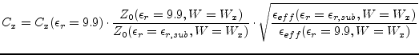 | (11.231) |
The equations of
The most useful model of a microstrip cross have been published in [39,40]. Fig. 11.10 shows the equivalent circuit (right-hand side) and the scheme with dimensions (left-hand side). The hatched area in the scheme marks the area modeled by the equivalent circuit. As can be seen the model require the microstrip width of line 1 and 3, as well as the one of line 2 and 4 to equal each other. Furthermore the permittivity of the substrat must be 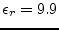. The component values are calculated as follows:
The equation of 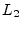 is obtained from the one of 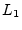 by exchanging the indices (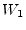 and 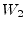). Note that 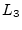 is negative, so the model is unphysical without external microstrip lines. The above-mentioned equations are accurate to within 5% for 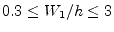 and 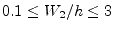 (value of 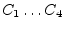) or for 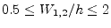 (value of 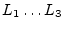), respectively.
Some improvement should be added to the original model:
| 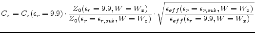 | (11.231) |
A useful model for an unsymmetrical cross junction has never been published. Nonetheless, as long as the lines that lie opposite are not to different in width, the model described here can be used as a first order approximation. This is perfomred by replacing and by the arithmetic mean of the line widths that lie opposite. This is done:
Another closed-form expression describing the non-ideal behaviour of a microstrip cross junction was published by [41]. Additionally there have been published papers [42,43,44] giving analytic (but not closed-form) expressions or just simple equivalent circuits with only a few expressions for certain topologies and dielectric constants which are actually of no pratical use.